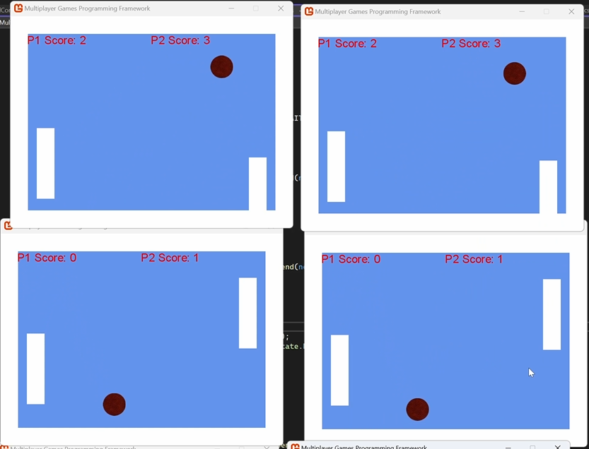
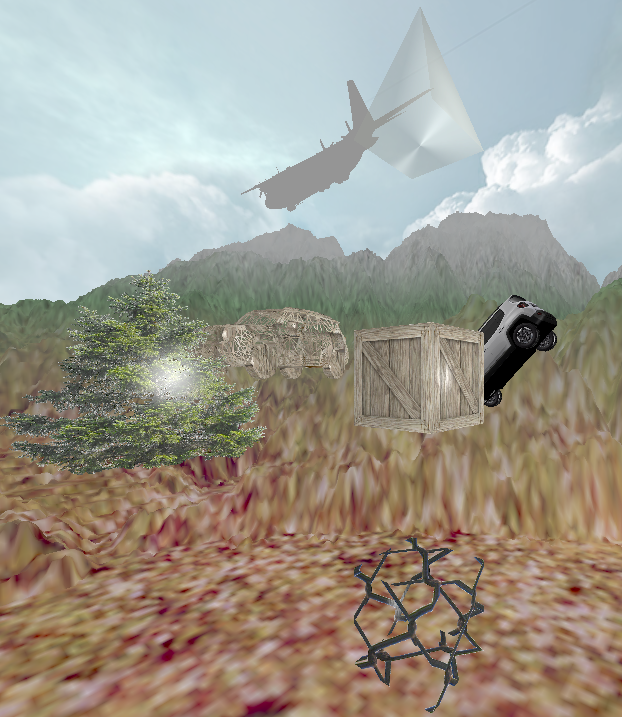

Intro
Below are some projects I have worked on and am currently working on. They aim to evidence my skills, while also taking some pride in my accomplishments.
Below are some projects I have worked on and am currently working on. They aim to evidence my skills, while also taking some pride in my accomplishments.

This project is a concurrent network application that allows for several users on a network to connect with each other to play games of pong.
Building from the non networked version of pong I created:
A networked hierarchy consisting of a main server, which handled several gameplay servers and connected clients onto those severs,
which in turn would handle connected clients playing their games of pong. It makes use of threads and tasks in c# to be able to achieve this synchronously.
The program can send encrypted data over the network using both UDP and TCP methods,
to ensure data arrives securely and fast enough to convince users they are playing the same game despite being on seperate devices.
This data is also replicated to all connected clients in the lobby so that what one user sees is the same as the other users see.
The program is server authorative, meaning the clients are simply playing a service provided by the server which
helps prevent cheating via a client sending false data. The program will also close down gracefully on both the server and client side,
preventing crashes for both and ensuring connections are terminated correctly before closure.
I learnt the fundamentals of network programming as well as how to use threads efficiently and safely to create networked programs in c#.
I learnt the difference between the communication methods of TCP and UDP and where it is best to use them.
I learnt the importance of security and how to ensure data I send over the network is sent securely.
I learnt how to synchronise games over networks to ensure multiple players experience the same thing.
A Concurrent network application in c#. Using multiple servers, communicating securely and efficiently, to allow clients to play pong.

This project was to showcase my ability to create efficient graphical effects in a real time application. It was made in DirectX11,
and displays the following methods:
- Manual Object Creation
- Phong Shading Model
- Object Texturing and specular mapping
- Loading object data using JSON
- Debug Fly Camera
- Skybox
- Alpha Blending / clipping, including transparency and fog
- Billboarding
- Terrain Generation
- Picking
It creates all these effects in real time, with a high framerate and the debug fly camera allows a user to navigate the scene
and get a greater visual of all these effects taking place.
A Graphics simulation in DX11 to showcase my ability to create and perform several graphical effects in a real-time application.

This is a project I worked on during college over a period of four months.
It was my first experience with creating games and with a lot of time and effort,
I built a game from the ground up in python using pygame, a GUI library.
I focused on creating:
Efficient data structures, of which, a recursive quadtree to handle collisions is what I'm most proud of.
Procedural content generation in a similar fashion to spelunky, one of my favorite games.
And a declarative menu system, that made me feel like I was using my own engine.
There are two game modes, classic and endless, both see the player navigating around procedurally generated levels,
created using a seed that can be set by the player or randomly generated,
collecting treasure, killing enemies, avoiding traps, climbing ladders and ropes, and blowing stuff up!
In classic mode after completing 5 levels the player will face a final boss to end the game,
but endless features unlimited levels where the player is only stopped by their own skill,
encouraging them to reach new high-scores every time they play.
After each run the player may unlock several buffs that they can pick from the next time they start a run,
and have the ability to have multiple saved profiles each with different progress and high-scores.
With all these cool features the game can get pretty overwhelming so I also included a save/load feature,
so a player can put down the game and come back later right where they left off.
Unfortunately, despite this being my first and most memorable coding project, this has fallen to the wayside.
With my transition to uni meaning I've switched my main language to c++,
I've instead decided to recreate this project in c++,
and any future developments will likely be applied to that version instead of this one.
A finished games project in python, with self-built data structures, PCG and declaritive built menus.


This project is a continuation of my previous project Going Under in python, the aim of this was to help me make the transition to c++ with code I am intimately familiar with, and the goal is to catch up to where I left off with the python version so that I can continue to make and implement new features.
C++ allows for direct memory management unlike pythons,
and so I've been working on methods to optimise my games memory usage,
such as the use of things like object pools so I don't need to keep creating and destroying objects.
I've also explored some new functionality for previoius mechanics such as the use of ENUMs for various states in the game like animation.
With some advice from my uni lecturers I've also implemented new and more efficient methods for various things,
like sprite sheets rather than seperate images.
After some work the game is now at the same standard as my python project. I've recently done some research into cyclic procedural content generation methods and I am interested to see if I could find a way to apply this to this project, that is my current goal.
A rebuild of the python version to help me learn c++, now being updated instead of the python version.

Marble Madness is a unity built prototype given to me as an assignment by my university to advance and develop. I worked on this for a few weeks.
On top of the movement and simple mechanics like a 'bounce pad' that were already in the prototype,
I've added:
Collectables to give the player score and encourage exploration of the levels.
A 'pop-up block' with an indicator when the block is about to pop up, launching the player away from the object.
This can be seen as an obstacle but I also experimented with using this to help the player reach areas of the level,
that would otherwise be unaccessible, bringing a new sense of verticality and puzzles to the game.
And finally I added floor that only appears when the player gets close.
This works well with the collectables as they can be used to show where hidden paths may be and vice versa.
To show my mechanics I made several additional levels for the game that push the boundaries of the mechanics I made,
as well as the mechancis already in place, to showcase them in the fullest and help spark new fresh ideas for future improvements.
As of now I have no future plans for this project, it was a good launch point for starting my career in unity,
but I have a greater interest in other projects, such as my current project Bloon Survivors.
Building on top of this framework was interesting, but I'd prefer to have an good understanding of how to build my own frameworks
from the ground up so that I can better use unity and push anything new I make to it's highest level.
Whether that be improving current systems or fashioning my own.
My entry point to unity by adapting a framework over a few weeks.

Bloon Survivors is a unity built 2D prototype. It is designed around the franchise Bloons and the game Vampire Survivors. Taking inspiration from both to combine into an fun concept. I worked on this for a week and this is the result.
The prototype initially only had functionality for basic character control, but also included a tile palette for basic backgrounds, walls and decorations.
I implemented an enemy spawning system, which slowly ramps up the difficulty of the enemies over time.
I added an automatic ability that shoots at these enemies like in vampire survivors.
And upgrades to that ability that fit in the bloons theme. There are also some basic sound effects.
Here's a video showcasing the game at it's current state
This project has a lot of potential. As of now it is only a rudimentary prototype, but has the potential to be much more. There is the potential to finish the upgrades for the current character, but there is also the possibility of adding several more characters from the bloons franchise with their unique abilities and upgrades. I aim to also make progress savable so the player can have some sort of meta progression throughout their runs of the game.
My current in progress Unity project, a reverse Bullet-Hell with the Bloons theme.

Back Track was a collaborative project between me and a couple of friends where over 48 hours we made a game in unity based on the theme "roots".
We successfully made a short puzzle game, where the player could "root" themselves in time to create a clone that could help them, press buttons flip switches and boost the player around the level.
You can access the game through the global games jam website or from the github repo here:
Back Track
There are no current plans to adapt this project, but it would be an easy one to get back in to due to its simple nature.
My Global Games Jam project.